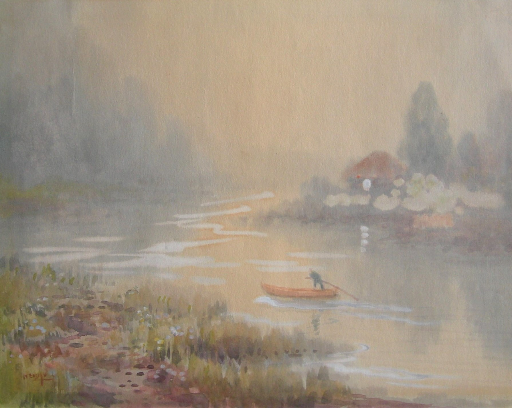

Li Mei-shu
1902-1983
Artist Biography
Li Mei-shu was born to an upper-class family in then Japanese controlled Taiwan. He showed a liking for art and participated in lessons under Ishikawa Kinichiro, a Japanese artist who introduced watercolour painting to Taiwan and who specialised in an impressionistic style. Li had works selected for both the first and second Taiwan Art Exhibitions and from 1929 furthered his studies at Tokyo School of Fine Arts. On graduation in 1934 he returned to Taiwan and was a co-founder of the Tai-Yang Art Society.
Li’s style varied little over the years, essentially being realist with an impressionistic touch. His subjects were largely landscapes, figures and still lifes. However, from the 1930s he tended to paint in oils rather than the watercolours of his early years. After the war Li became involved in politics and also in the restoration of the Qingshui Zushi Temple in Sanxia. From 1962 he devoted himself to teaching art in a number of Taiwanese universities. Li is considered one of the foremost early modernist Taiwanese painters and there is a permanent institution in his name, the Li Mei-shu Memorial Gallery in Sanxia.

Untitled